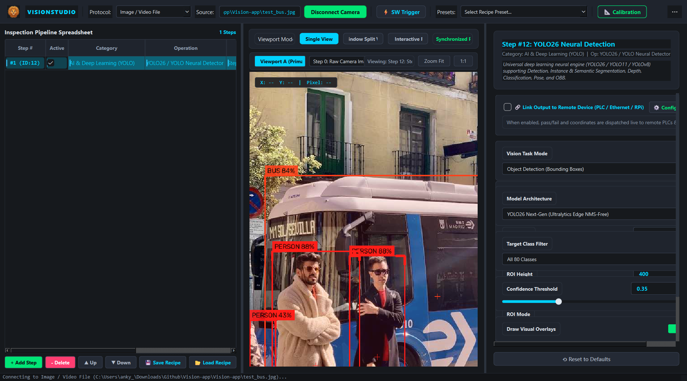

Industrial Vision Tools Catalog
Comprehensive specifications, formulas, parameter options, and return signatures for all classical and deep learning inspection tools.
Next-Gen Neural Detection (YOLO26 / Modern YOLO)

VisionStudio features a unified multi-task deep learning engine supporting modern state-of-the-art vision models including YOLO26, YOLO11, and YOLOv8. The inference engine supports 7 core computer vision tasks with sub-50ms CPU execution, end-to-end NMS-free tensors, and automatic hardware session caching.
7 Supported YOLO Computer Vision Tasks
1. Object Detection (Bounding Boxes)
Standard horizontal bounding boxes with class confidence labels, corner reticles, and centroid tracking across 80 COCO classes.
task="detect"
2. Instance Segmentation (Masks)
Generates precise pixel-accurate boundary contours, translucent colored masks, and surface area measurements for each detected workpiece.
task="segment"
3. Semantic Segmentation (Scene)
Dense pixel-level scene classification partitioning imagery into Foreground Objects, Structural Features, and Background with percentage coverage HUD.
task="semantic"
4. Depth Estimation (Distance Field)
Monocular depth gradient mapping rendered via pseudo-color thermal/inferno colormaps with real-time center, minimum, and maximum depth probes.
task="depth"
5. Image Classification (Top-K)
Global scene classification scoring and ranking top candidate categories with Top-1 / Top-5 probabilities and visual confidence progress bars.
task="classify"
6. Pose Estimation (17 Keypoints)
Full skeletal kinematic tracking identifying 17 anatomical keypoints (shoulders, elbows, wrists, hips, knees) with color-coded limb connections.
task="pose"
7. Oriented Bounding Boxes (OBB)
Rotated minimum bounding boxes computing exact workpiece tilt angle θ (-90° to +90°) and heading vectors for robotic pick-and-place.
task="obb"
Spreadsheet & Pipeline Formula Syntax Examples
Geometric Shape Detection, Hand Tracking & OCR
Geometric Shape Detector
Classifies industrial workpieces and objects into canonical geometric primitives: Circle, Square, Rectangle, Triangle, Polygon, and Ellipse.
- Circularity and polygon approximation (Douglas-Peucker)
- Orientation angle, bounding W/H, and area callouts
- Selectable filter for target shape or detection of all shapes
Hand & Gesture Tracker (MediaPipe & OpenCV)
Vision-based contactless human-machine interface (HMI). Leverages Google MediaPipe Hands (21 3D landmarks) with automatic high-speed OpenCV skin-chroma fallback.
- 21 anatomical skeletal connections with
mp_drawingstyles - Index fingertip (ID: 8) callout reticle and pixel coordinates
(index_x, index_y) - Real-time gesture classification: Fist, Pointing, Peace / V-Sign, OK Sign, Open Palm
- Selectable mirror viewing (horizontal flip) and multi-hand tracking
Optical Character Recognition (OCR)
Reads serial numbers, date codes, and labels on industrial packaging and printed circuit boards (PCBs).
- Morphological gradient & horizontal glyph bridging segmentation
- Otsu threshold binarization for high-contrast character isolation
- Tesseract OCR engine integration with character height filtering
Industrial Caliper & Metrology
Precision dimensional inspection applying real-world camera optical calibration factors.
- Measures Line Length, Bounding Width/Height, Diameter, and Area
- Configurable calibration scale (
mm/px,cm/px,in/px,um/px) - Go / No-Go tolerance checking against engineering limits
In-App Camera Calibration & Scale Calculation
Machine vision measurements require translating raw sensor pixels into physical engineering units. VisionStudio provides a dedicated "📐 Calibration" tool in the top application toolbar.
- Place a known physical gauge block, ruler, or calibration target under the camera.
- Click "📐 Calibration" on the toolbar. Enter the known reference dimension (e.g.
50.0 mm) and measured pixel span (e.g.500 px). - Click "Calculate Ratio" followed by "Save & Apply to Pipeline". The calibration factor (
0.1000 mm/px) will automatically propagate across all measurement steps.
Linking Step Outputs to Remote Devices & PLCs
Any step in the inspection pipeline can be individually linked to transmit real-time pass/fail decisions, part counts, or metrology coordinates (X, Y, Angle, Length) to external hardware.
🔗 Step-Level Remote Link
When adding a step, check "Link output of this step to Remote PLC / Ethernet", or toggle the switch in the Property Inspector. Linked steps display a 🔗PLC status badge.
📡 Configurable Remote Targets
Click "📡 PLC & Devices" on the main toolbar to edit IP addresses, ports, and protocols for Siemens S7-1200/1500, Delta Modbus TCP, Beckhoff ADS, Ethernet TCP/UDP, and Raspberry Pi GPIO.
Classical Measurement & Defect Tools
| Tool | Formula Signature | Output Object | Parameters & Notes |
|---|---|---|---|
| PatMax | =PatMax(A0) |
PatMaxResult |
Contour gradient matching. Attributes: Score, X, Y, Angle. |
| FindBlobs | =FindBlobs(A0, threshold=128, min_area=50) |
BlobResult |
Extracts foreground blobs. Attributes: Count, Blobs[i].Area. |
| DetectFlaw | =DetectFlaw(A0, sensitivity=35) |
FlawResult |
Golden template scratch detection. Attributes: Passed, FlawCount. |
| FindLine | =FindLine(A0) |
LineResult |
Perpendicular caliper rakes. Attributes: P1, P2, Angle. |
| FindCircle | =FindCircle(A0) |
CircleResult |
Radial caliper rays. Attributes: Center, Radius. |
| Caliper | =Caliper(A0) |
CaliperWidthResult |
Edge pair gap distance. Attributes: Width, Center. |
| EdgeCount | =EdgeCount(A0) |
EdgeCountResult |
Counts boundary transitions. Attribute: Count. |
| ReadIDMax | =ReadIDMax(A0) |
CodeResult |
Decodes 1D barcodes and 2D QR / DataMatrix. Attributes: Text, Type. |
| ReadOcrMax | =ReadOcrMax(A0, regex="[A-Z0-9]+") |
OcrResult |
Industrial optical character recognition with regex validation. |
| ExtractColor | =ExtractColor(A0, color="GREEN") |
ColorResult |
HSV segmentation (RED, GREEN, BLUE, YELLOW, WHITE). |
| Distance | =Distance(B2.X, B2.Y, C3.X, C3.Y) |
Float |
Calculates Euclidean distance in pixels / millimeters. |
| If | =If(B2.Score >= 70.0, "PASS", "FAIL") |
String |
Quality gate decision triggering overall pass/fail status. |